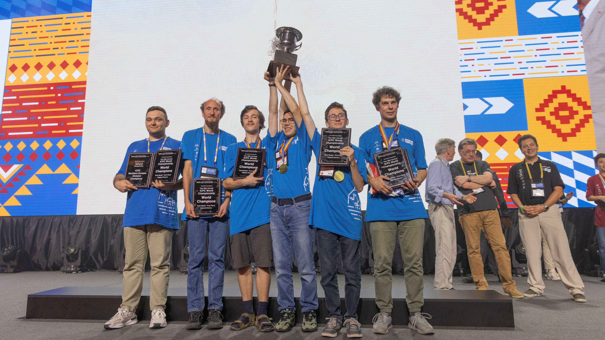
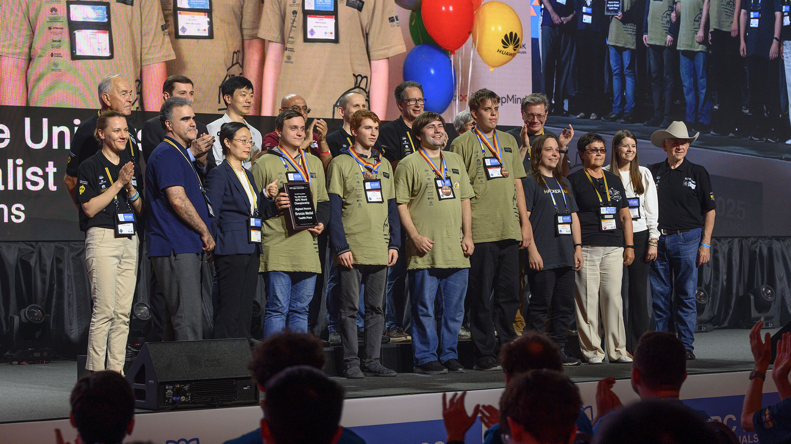

Welcome to the Northern Eurasia Regional Contests!
The ICPC, the “International Collegiate Programming Contest”, is an extra-curricular, competitive programming sport for students at universities around the world. ICPC competitions provide gifted students opportunities to interact, demonstrate, and improve their teamwork, programming, and problem-solving process. The ICPC is a global platform for academia, industry, and community to shine the spotlight on and raise the aspirations of the next generation of computing professionals as they pursue excellence.
Northern Eurasia Finals 2026-2027 is scheduled for December 11-13, 2026 and will be collocated with Russia Team Open, High School Programming Contest! Save the date!
Добро пожаловать на соревнования студенческого командного чемпионата мира по программированию ICPC в Северной Евразии!
В сезоне 2026-2027, финальные соревнования Северной Евразии пройдут одновременно с ВКОШП с 11 по 13 декабря!
Расписание региональных соревнований

Объявлены финальные результаты студенческого командного чемпионата мира по программированию ICPC 2025!Санкт-Петербургкский государственный университет -- чемпион ICPC 2025! Поздравляем СПбГУ с ПЯТЫМ кубком! Леонид Данилевич, Максим Туревский, Фёдор Ушаков и их тренеры, Иван Казменко, Николай Дубчук, Михаил Иванов, Андрей Лопатин и Александр Савченко.
Поздравляем Саратовский Государственный университет с бронзовой медалью!

The results are in from the 2025 ICPC World Finals in Baku, Azerbaijan, and St. Petersburg State University is your ICPC 2025 World Champion!
Leonid Danilevich, Maksim Turevskii, and Fedor Ushakov, with coaches Ivan Kazmenko, Nikolay Dubchuk, Mikhail Ivanov, Andrei Lopatin, and Aleksandr Savchenko, have made history by solving 11 out of 12 problems, including one just 2 minutes before the contest ended. This marks the fifth victory for St. Petersburg State University, making it the sole second-most successful university in ICPC history.
Congratulations to Saratov State University with Bronze Medals!